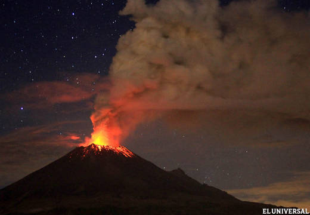
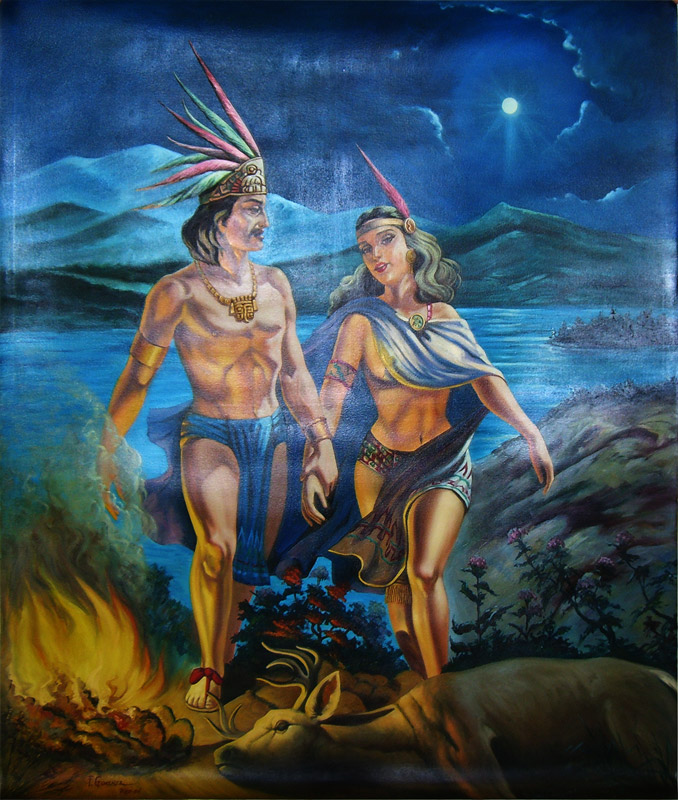
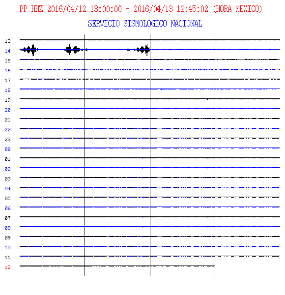
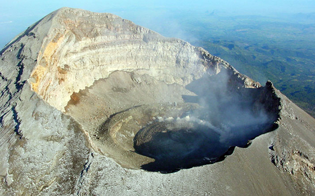
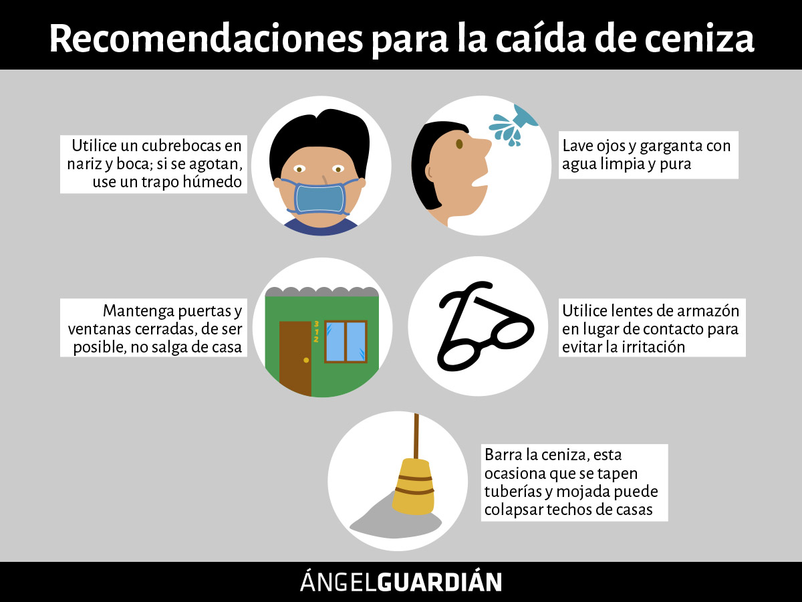
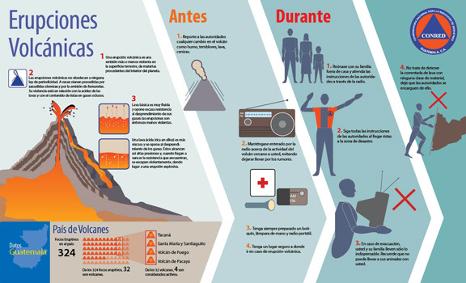

El Popocatépetl (en náhuatl: popocatepetl, ‘el cerro que humea’‘popoca, humear; tepetl, cerro’)? es un volcán activo localizado en el centro de México, en los límites territoriales de los estados de Morelos, Puebla yMéxico. Se localiza a unos 72 km al sureste de la Ciudad de México, 43 km de Puebla, 63 km de Cuernavaca, y 53 km de Tlaxcala.3 Tiene una forma cónica simétrica y está unido por la parte norte con el Iztaccíhuatl mediante un paso montañoso conocido como Paso de Cortés. El volcán tiene glaciares perennes cerca de la boca del cono, en la punta de la montaña. Es el segundo volcán más alto de México, con una altitud máxima de 5500 metros sobre el nivel del mar, sólo después del Citlaltépetl de 5610 msnm.
Hace ya miles de años, cuando el Imperio Azteca estaba en su esplendor y dominaba el Valle de México, como práctica común sometían a los pueblos vecinos, requiriéndoles un tributo obligatorio. Fue entonces cuando el cacique de los Tlaxcaltecas, acérrimos enemigos de los Aztecas, cansado de esta terrible opresión, decidió luchar por la libertad de su pueblo. El cacique tenía una hija, llamada Iztaccíhuatl, era la princesa más bella y depositó su amor en el joven Popocatépetl, uno de los más apuestos guerreros de su pueblo. Ambos se profesaban un inmenso amor, por lo que antes de partir a la guerra, Popocatépetl pidió al cacique la mano de la princesa Iztaccíhuatl. El padre accedió gustoso y prometió recibirlo con una gran celebración para darle la mano de su hija si regresaba victorioso de la batalla. El valiente guerrero aceptó, se preparó para partir y guardó en su corazón la promesa de que la princesa lo esperaría para consumar su amor. Al poco tiempo, un rival de amores de Popocatépetl, celoso del amor de ambos se profesaban, le dijo a la princesa Iztaccíhuatl que su amado había muerto durante el combate. Abatida por la tristeza y sin saber que todo era mentira, la princesa murió. Tiempo después, Popocatépetl regresó victorioso a su pueblo, con la esperanza de ver a su amada. A su llegada, recibió la terrible noticia sobre el fallecimiento de la princesa Iztaccíhuatl. Entristecido con la noticia, vagó por las calles durante varios días y noches, hasta que decidió hacer algo para honrar su amor y que el recuerdo de la princesa permaneciera en la memoria de los pueblos. Mandó construir una gran tumba ante el Sol, amontonando 10 cerros para formar una enorme montaña.Tomó entre sus brazos el cuerpo de su princesa, lo llevó a la cima y lo recostó inerte sobre la gran montaña. El joven guerrero le dio un beso póstumo, tomó una antorcha humeante y se arrodilló frente a su amada, para velar así, su sueño eterno. Desde aquel entonces permanecen juntos, uno frente a otro. Con el tiempo la nieve cubrió sus cuerpos, convirtiéndose en dos enormes volcanes que seguirán así hasta el final del mundo. La leyenda añade, que cuando el guerrero Popocatépetl se acuerda de su amada, su corazón que guarda el fuego de la pasión eterna, tiembla y su antorcha echa humo. Por ello hasta hoy en día, el volcán Popocatépetl continúa arrojando fumarolas.

1. Que continúe la actividad explosiva de escala baja a intermedia.
2. Lluvias de ceniza leves a moderadas en poblaciones cercanas.
3. Posibilidad de flujos piroclásticos y flujos de lodo de corto alcance.
1. Continuar con el radio de seguridad de 12 km, por lo que la permanencia en esa área no está permitida.
2. Mantener el tránsito controlado entre Santiago Xalitzintla y San Pedro Nexapa, vía Paso de Cortés.
3. A las autoridades de Protección Civil, mantener sus procedimientos preventivos, de acuerdo con sus planes operativos.
4. A la población, estar atenta a la información oficial que se difunda.
Cubrir nariz y boca con un pañuelo húmedo o cubreboca.
Limpiar ojos y garganta con agua pura.Utilizar lentes de armazón y evitar los lentes de contacto para reducir la irritación ocular.
Cerrar ventanas o cubrirlas y permanecer lo más posible dentro de la casa.
El monitoreo del Volcán Popocatépetl se realiza de forma continua las 24 horas. Cualquier cambio en la actividad será reportado oportunamente.
Muchos eventos fueron documentados por los aztecas en sus códices, como el que sucedió en el año 1509 d. C, el cual fue plasmado en los códices Telleriano-Remensis y Vaticano. En 1519 dio inicio una actividad fumarólica que culminó en 1530. Entre 1539 y 1549 se produjeron erupciones explosivas moderadas que liberaron piedra pómez del interior de la tierra.

La información publicada en esta sección es el resultado del monitoreo del volcán Popocatépetl que se realiza conjuntamente con la Universidad Nacional Autónoma de México. El reporte se publica diariamente a las 11 de la mañana; en éste se resume la actividad registrada durante las últimas 24 horas, esto es, de 10 de la mañana del día anterior a 10 de la mañana del día en curso. En caso de que ocurra un evento extraordinario se reportará de forma inmediata. Para consulta de reportes anteriores de click

Tiene una forma cónica simétrica y está unido por la parte norte con el Iztaccíhuatl mediante un paso montañoso conocido como Paso de Cortés. El volcán tiene glaciares perennes cerca de la boca del cono, en la punta de la montaña. Es el segundo volcán más alto de México, con una altitud máxima de 5500 metros sobre el nivel del mar, sólo después del Citlaltépetl de 5610 msnm.


1.-No humedecer la ceniza a fin de evitar taponamientos en el sistema de alcantarillado
2.-Mantén la calma.
3.-Utiliza medios electrónicos y de comunicación para obtener información confiable que den las autoridades de Protección Civil sobre la caída de ceniza y atiende siempre sus instrucciones.
5.-Cierra puertas y ventanas y coloca toallas o trapos húmedos en las rendijas.
6.-Si tienes que salir cúbrete con un pañuelo o tapabocas, limpia ojos y garganta con agua pura.
7.-Para los ojos, usa lentes protectores, especialmente si usas lentes de contacto.
8.-Ten a la mano una linterna y pilas.

• Con los miembros de la familia preparemos el maletín para emergencias, con alimentos no perecederos, radio, foco, documentos personales, medicinas y protectores para cubrir la nariz.
• Ubiquemos los albergues temporales, las rutas de evacuación y las zonas seguras en su comunidad.
• Respetemos los sitios declarados peligrosos.
• Consultemos a los Comités Municipales y Locales de Emergencias, sobre el sistema de evacuación y los centros de albergues para animales.
• Establezcamos una ruta de evacuación, lejos de los ríos y quebradas y los posibles albergues.
• Comuniquemos a las autoridades locales o al 9-1-1 cualquier anomalía u observación sobre el comportamiento del volcán.
• No nos dejemos llevar por falsos rumores de personas no autorizadas.